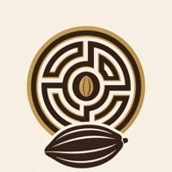

Building a developer knowledge base
for GitHub Copilot
The context gap
Imagine joining a team with access to the codebase, but none of the planning documents. Could you explain why a feature was built the way it was?
One engineering answer can span three worlds
Code
What behavior exists today?
Evidence: implementation, tests, configuration
GitHub activity
What changed, why, and what remains open?
Evidence: PRs, issues, discussions
Organization documents
What does the business require or prohibit?
Evidence: requirements, ADRs, policies
Today: give GitHub Copilot access to each kind of evidence, then compare two ways to coordinate retrieval.
Choose one Copilot client
Copilot CLI
Work from a terminal in the local repository.
Copilot App
Work from a project session connected to the repository.
VS Code
Work in Agent mode with the repository open.
Use the same client for every exercise so the architectural comparison stays clear.
Part 1 · 15 minutes
Meet Cocoarynth Trace

A traceability app for single-origin chocolate
- Tracks cacao origin, production, and shipment
- Connects finished batches to wholesale deliveries
- Generates an Origin Passport
- Exports approved traceability fields
Exercise: investigate the local repository
Using the implementation files and tests, explain what this project does, identify its main components, and describe how it exports an Origin Passport. Cite the files that support your answer.
Watch
Which files does Copilot inspect?
Review
What tool permissions does it request?
Verify
Which claims have direct code evidence?
What local code can prove
We can establish
- The application exports JSON
- Which fields are included
- Which fields are excluded
- How the endpoint and UI behave
We still cannot establish
- Why JSON was originally chosen
- What work is planned
- What a retailer requires
- Whether the pilot is ready
Part 2 · 15 minutes
Connect Copilot to GitHub
Add live engineering artifacts without copying them into the prompt.
MCP gives agents a standard way to use external tools
MCP host
Issues · PRs · Discussions
The model suggests calls; the client runtime executes them. Review permissions and tool calls before trusting the answer.
Use the hosted read-only GitHub MCP endpoint
Endpoint
https://api.githubcopilot.com/mcp/readonlyToolsets
repos,issues,pull_requests,discussionsWhy read-only?
- Shared synthetic repository
- No accidental issue or PR changes
- Focus on investigation and evidence
- Same conceptual setup across clients
Exercise: investigate the feature history
Use GitHub MCP to investigate this repository. Why was the Origin Passport export built this way, and what related work remains open? Cite the relevant pull request, issue, and discussion.
original choice
remaining work
field policy
GitHub closes one gap—and reveals another
| Question | GitHub evidence | Answer? |
|---|---|---|
| Why JSON? | Merged implementation PR | Yes |
| Is CSV planned? | Open CSV-support issue | Yes |
| Which fields are partner-safe? | Engineering discussion | Yes |
| Does Mapayça require CSV? | No authoritative requirement in GitHub | No |
Part 3 · 15 minutes
Explore a document knowledge base
The missing context lives in organizational documents
Mapayça pilot requirements
Defines the required CSV format, schema, dates, and acceptance criteria.
Architecture decision
Explains why an Origin Passport is an immutable snapshot.
Data-sharing policy
Separates shareable traceability facts from confidential data.
Support runbook
Guides validation, regeneration, and import troubleshooting.
The corpus was prepared before you arrived
Blob Storage
extract + chunk
hybrid index
retrieval planning
No attendee Azure account, Python environment, document upload, or indexer run is required.
Know which layer you are inspecting
Exercise: follow evidence through the portal
CSV export requirements.The authoritative requirement
“The importer requires CSV and rejects JSON uploads.”
- Stable header row
- One batch per row
- ISO
YYYY-MM-DDdates - No pricing or personal contacts
Part 4 · 15 minutes
Connect Copilot to the documents KB
Keep GitHub MCP enabled. Add the documents-only KB as a second integration.
One native MCP endpoint exposes the documents KB
Connection
- Name:
cocoarynth-documents - Transport: authenticated HTTP
- Credential: shared Search query key
- Tool: knowledge-base retrieval
Credential hygiene
- Use the private distribution method
- Do not paste the key into chat
- Do not commit client configuration
- Do not include the key in screenshots
Separate integrations: Copilot coordinates the calls
plans across tools
live engineering artifacts
organizational documents
The client sees two integrations and decides when to call each one.
Exercise: answer the pilot-readiness question
Can Cocoarynth support Mapayça Markets' traceability import today? Identify the blocker, check relevant issues for related open work using GitHub MCP, and cite both the pilot requirements and current implementation evidence.
Requirements
CSV required; JSON rejected.
Implementation
Origin Passports export as JSON.
Remaining work
CSV-support issue is open.
A complete answer distinguishes facts from sources
| Claim | Best supporting source | Status |
|---|---|---|
| Mapayça requires CSV | Pilot requirements document | Established |
| Cocoarynth exports JSON | Code or merged PR | Established |
| CSV support remains unfinished | Open GitHub issue | Open work |
| The pilot is ready today | All evidence together | No |
Part 5 · 20 minutes
Use the combined knowledge base
Move source coordination behind one reusable MCP endpoint.
The combined KB has two knowledge sources
Foundry IQ plans retrieval
documents
GitHub tools
cocoarynth-kb-all packages the retrieval configuration behind one native MCP endpoint.
Isolate the comparison
cocoarynth-combined.Compare where retrieval decisions happen
| Separate integrations | Combined knowledge base |
|---|---|
| Copilot plans calls to GitHub MCP and the documents KB | Copilot calls one combined KB tool |
| Client-specific orchestration | Reusable retrieval configuration |
| Attendee GitHub identity | Instructor-managed read-only lab identity |
| Two visible integration boundaries | One endpoint with nested source activity |
Judge the evidence—not the number of tool calls
Coverage
Did it retrieve the CSV requirement and JSON implementation?
Attribution
Can you tell which claim came from which source?
Uncertainty
Does it admit when a source was not selected or evidence is missing?
A combined KB does not guarantee a better answer—or that every source is selected for every question.
Closing · 10 minutes
Take the pattern back to your team
Start with the question, then map the evidence
Connect separate MCP servers
Choose this when the client should coordinate distinct tools and identities.
Build a combined knowledge base
Choose this when you want reusable, centrally configured retrieval across sources.
The one thing to remember
Coding agents need context beyond code.
Code
What exists
GitHub
What changed
Documents
What the organization needs
Connect existing MCP servers for live systems. Build a knowledge base when documents need to become searchable, citable evidence.
Continue after the workshop
Take-home repository
github.com/pamelafox/developer-kb-for-github-copilot
Exercises, portal, ingestion code, client configuration, tests, and Azure infrastructure.
Optional extensions
- Compare retrieval configurations
- Draft a cited readiness brief
- Replace the corpus and rerun ingestion
The event environment is temporary. Use the repository to deploy the pattern into your own Azure environment.